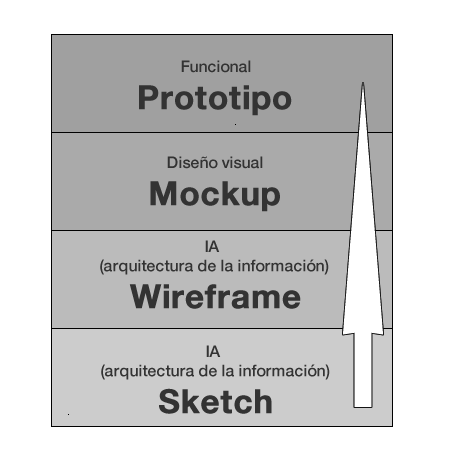

Abans de res, veurem què és i que no és un sketch, un wireframe , un mockup i un prototip, conceptes sobre els quals hi ha prou confusió i no han de ser confosos els uns amb els altres i sobre els quals és complicat trobar informació precisa. Aquesta confusió és especialment rellevant entre wireframe i mockup ja que molts programes d’ajuda en el disseny permeten fer totes dues activitats en el mateix programa. No sols hi ha diferències conceptuals entre els uns i els altres, sinó que també cal tindre en compte poden existir repercussions econòmiques en un projecte, ja que utilitzar l’un o l’altre influeix en la quantitat d’hores d’invertides en el desenvolupament/dissenye i per tant incrementar els costos associats.
Tots aquests passos són part integral del procés de disseny UX, i així a cadascun cal donar-li la deguda atenció
Abans de passar a la fase de desenvolupament d’un lloc web o aplicació, convé passar per aquestes etapes preliminars. Aquestes etapes també permeten a l’equip de treball i, a vegades, per a grans projectes, que alguns usuaris o els denominats beta-tester posen a prova l’aparença, estructura i funcionalitat abans del seu llançament.
L’ideal és que aquestes etapes preliminars permeten trobar qualsevol problema mentre està encara en fase inicial i afinar així el seu disseny, estructura o funcionalitat, per a comunicar el seu missatge amb més claredat.
Abans de continuar, cal aclarir el significat de UX, encara que és alguna cosa conegut pels dissenyadors, no ho és tant per les persones que s’estan iniciant en aquest sector.
Trobar una definició consensuada per a UX o experiència d’usuari (User experience ), no resulta fàcil. Per a Arhippainen i Tähti l’Experiència de l’Usuari és senzillament com l’experiència que obté l’usuari quan interactua amb un producte en condicions particulars. No obstant això Knapp Bjerén la defineix com «el conjunt d’idees, sensacions i valoracions de l’usuari resultat de la interacció amb un producte; és resultat dels objectius de l’usuari, les variables culturals i el disseny de la interfície».
En el desenvolupament de productes i/o aplicacions, ja siguen per a la web , com una altra mena d’aplicacions informàtiques, hi ha una sèrie de fases que convé seguir, encara que molts professionals, en funció de la mena de projecte poden obviar alguna o poden fer més o menys recalcament en alguna fase. De manera general els passos a seguir seran:

Aquests passos ens ajuden a posar en ordre les nostres idees, explorar diferents camins de concepte o disseny i detectar possibles errors o problemes.
Seguidament es mostren amb més detall les parts definides anteriorment.
Com a resum, podem dir que la raó per la qual dividim les tasques en Sketch, wireframes, maquetes, i prototips és perquè cadascun té un propòsit diferent. Els Sketch ens permeten crear una idea inicial de forma molt ràpida, realitzar una «tempesta d’idees». Amb els wireframes, en centrar-nos només en l’estructuració, som capaces de crear una estructura sòlida sense distraure’ns de moment amb les imatges d’un MockUp o amb la funcionalitat d’un prototip. Mentre Sketch, wireframes i MockUps s’inclinen més cap a la creativitat i són més abstractes, els prototips requereixen portar les idees a la vida i són necessaris per a fer proves d’usabilitat i UX.
Informació de la web: https://mosaic.uoc.edu